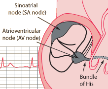

The Sinoatrial Node: The Body's Natural Pacemaker
|

|
In the upper part of the right atrium of the heart is a specialized bundle of neurons known as the sinoatrial node (SA node). Acting as the heart's natural pacemaker, the SA node "fires" at regular intervals to cause the heart of beat with a rhythmn of about 60 to 70 beats per minute for a healthy, resting heart. The electrical impulse from the SA node triggers a sequence of electrical events in the heart to control the orderly sequence of muscle contractions that pump the blood out of the heart.
|
The depolarization and repolarization of the SA node and the other elements of the heart's electical system produces a strong pattern of voltage change which can be measured with electrodes on the skin. Voltage measurements on the skin of the chest are called an electrocardiogram or ECG.
While it is the norm for nerve cells that they require a stimulus to fire, the SA node can be considered to be "self-firing". It repetitively goes through a depolarizing discharge and then repolarizes to fire again. This action is analogous to a relaxation oscillator in electronics. Such an oscillator is routinely used to produce a periodic flash from a light. The circuit involves a capacitor which is charged by the energy of a battery(roles played by the membranes of the SA node and the ion transport processes which repolarize it) and a resistor which controls the rate of flashing of the light. In the case of the SA node, there is input frorm the physiology of the body related to oxygen demand and other factors which control the rate of firing of the SA node and therefore the heartrate.
|